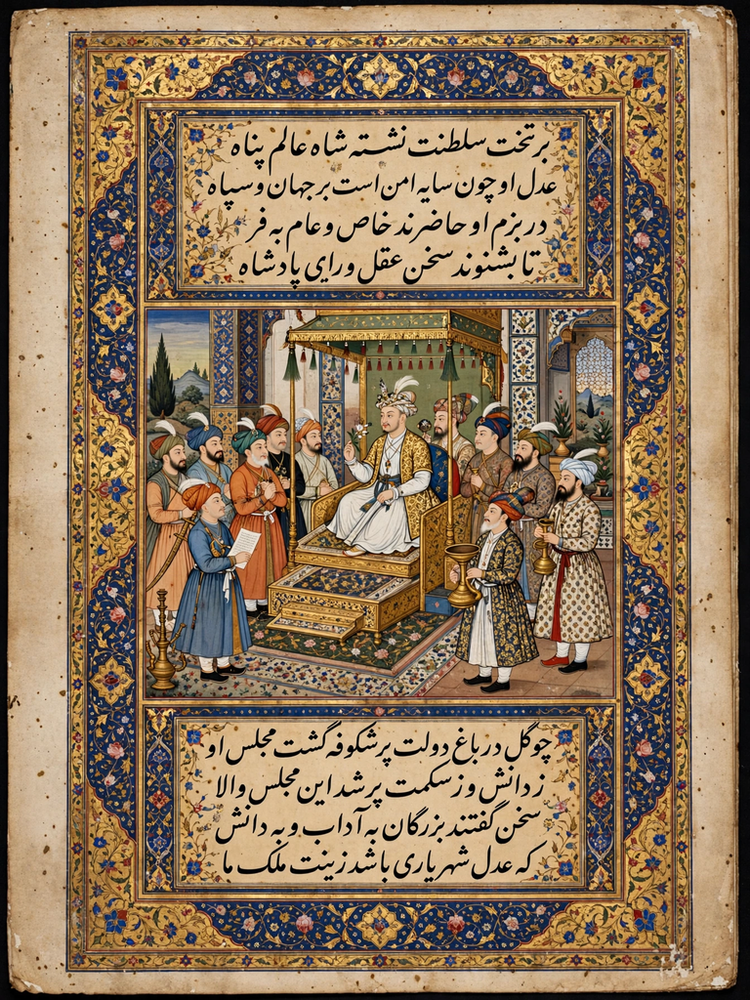

| Akbarnama | |
|---|---|
 | |
| Author | Abul Fazl |
| Language | Persian |
| Subject | Reign of Akbar; Mughal administration |
| Written | c. 1590–1602 |
| Volumes | 3 (the third being the Ain-i-Akbari) |
The Akbarnama (Persian: اکبر نامہ, "Book of Akbar") is the official chronicle of the reign of the Mughal emperor Akbar, written in Persian by his court historian Abul Fazl. Commissioned by Akbar in 1589 and worked on until the author's assassination in 1602, it is among the most richly illustrated manuscripts of the Mughal era and a foundational source for the history of sixteenth-century India.
The work falls into three volumes. The first covers Akbar's ancestors from Timur to Humayun and the first thirty years of the reign; the second continues the narrative to 1602. The third volume, the Ain-i-Akbari ("Institutes of Akbar"), is a systematic gazetteer of the empire — its provinces, revenues, army, court regulations, castes, religions, and calendars — and remains an indispensable statistical portrait of Mughal India.
The imperial copy, produced in the court atelier in the 1590s, contained some 150 large miniature paintings by masters such as Basawan and Miskin, depicting battles, court ceremonies, and hunts — including the Second Battle of Panipat. Much of this manuscript is now in the Victoria and Albert Museum, London. A second illustrated copy survives in part in the British Library and the Chester Beatty Library.
The first two volumes were translated into English by Henry Beveridge (1897–1921); the Ain-i-Akbari was translated by Heinrich Blochmann and H. S. Jarrett.